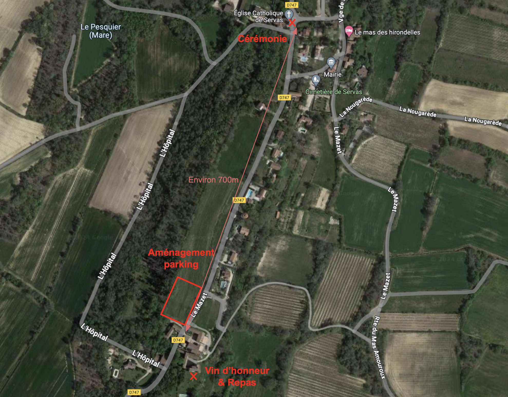

Paul & Louise
se marient le 20 juillet 2024
Lieu
Le mariage aura lieu le 20 juillet 2024 à 15h en l'église Saint
Jean-Baptiste de Servas* 30340.
*Servas dans le Gard (30) et pas dans l'Ain (01)
Confirmer votre présence
Nous vous invitons à répondre au formulaire suivant pour confirmer votre
présence : /INSERER LE LIEN/
Informations pratiques
Voici quelques informations pratiques dont vous aurez peut-être besoin.
Se garer
Le jour du mariage vous pourrez vous garer à un parking aménager à côté
du vin d'honneur & repas, et à 700m de l'église.

Se loger
Pour être logé au plus proche de la cérémonie, nous vous invitons à
essayer de trouver un logement autour de Servas :
Alès/Rousson/Allègre-les-Fumades/Navacelles/Brouzet-lès-Alès/Mons dans
le meilleur des cas. Il est à noter que nous allons essayer de mettre à
disposition des taxis pour les personnes qui ne pourront pas/plus
conduire le soir des festivités.
Cadeau des mariés
Suite à notre mariage nous souhaitons parcourir l'Amérique du Sud
pendant au moins 6 mois. Par conséquent, concernant le cadeau des mariés
nous aimerions que les invités nous aident un peu à financer ce voyage.